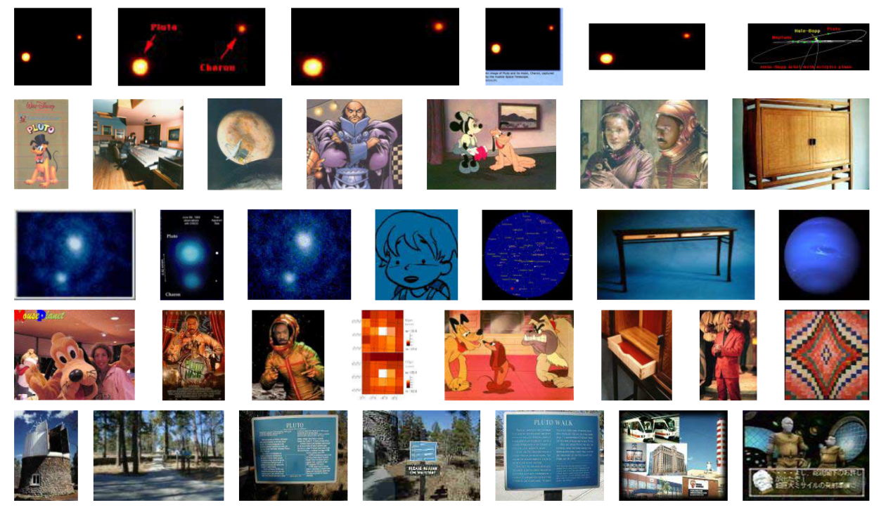

Aprendizagem Automática
1 - Introduction
Ludwig Krippahl
Introduction
Summary
- Course formalities
- Machine learning
- Course objectives and outline
Introduction
Formalities
Formalities
Instructors
- Lectures, P1, P6: Ludwig Krippahl
- P2 - P5: Francisco Azevedo
Course site: aa.ssdi.di.fct.unl.pt
- Slides, notes, lecture videos
Classes
- Lectures: 2 x 1h per week, ~70% exposition, ~30% discussion
- Tutorials: 1 x 2h per week
- Questions about exercises and assignments
- Some lectures reserved for revisions and assigments
Formalities
Assessment
- Theoretical: 2 written tests or final exam.
- One handwritten A4 sheet for notes
- Exam scored in two independent parts
- Practical: 2 assignments, groups of 2 students in same class.
- Plus individual written defense during the test.
- Groups formed by October 7
- All submission to praticasice@gmail.com using official FCT address
- NOTE: this address is for automated processing only
- Evaluation
- Required: minimum of 9.5 in each component.
- Final grade: simple average of the two components.
- If frequency from 2015/16 - 19, do not enroll in practical classes
Formalities
Recommended Software
- Python 3.x, Spyder IDE
- Several libraries needed: NumPy, Matplotlib, Scikit-Learn, ...
- Simple instalation: Anaconda, https://www.anaconda.com/download
Bibliography
- Lecture notes, available on web site
- Bishop, Pattern Recognition and ML 2006
- Alpaydin, Introduction to ML (2nd ed.) 2010
- Marsland, Machine Learning, 2009
- Mitchell, Machine Learning, 1997
Introduction
Machine Learning
Machine Learning
- Making sense of data.
" Field of study that gives computers the ability to learn without being explicitly programmed"
(Samuel, 1959)
- More formal, operational, definition:
"A computer program is said to learn from experience E with respect to some class of tasks T and performance measure P, if its performance at tasks in T, as measured by P, improves with experience E"
(Mitchell, 1997)
Machine Learning
Machine Learning problem
- A task that the system must perform.
- A measure of its performance
- The data used to improve its performance.
Machine Learning
Example: automated flight ticketing
- Task: identify requests for flight information and tickets.
- Performance measure: correctly identified expressions.
- Data: Annotated voice records.
<book_flight> please book me on </book_flight>
<numflt> flight twenty one </numflt>
<i_want_to_go> i would like to fly </i_want_to_go>
<city_from> from philadelphia </city_from>
<city_to> to dallas </city_to>
<request1> could you please list the </request1> flights
<city_from> from boston </city_from> <city_to> to denver </city_to>
on <date> july twenty eighth </date>Source: Erdogan, Using semantic analysis to improve speech recognition performance
Machine Learning
Machine Learning problems
- Predicting prices (Regression)
- Classifying spam emails (Classification)
- Products purchased together (Association Rules)
- Grouping similar images (Clustering)
- Distributions in diagnosis (Density Estimation)
Machine Learning
Relations to other disciplines
- Computer Science
- Statistics and Probability
- Mathematics
- Neuroscience
- Philosophy
Introduction
What is Machine Learning for?
Using ML
Solve problems without explicit rules
- Example: identify handwritten digits
Using ML
Solve problems without explicit rules
- Train with labelled data
- Find a function for classifying
- Partition the input space into the 10 classes (0..9)
Using ML
Data mining
- Large volumes of data
- Google searches
- Facebook relations graph
- Credit card fraud
Adaptive systems
- Need to respond to changing conditions
- Personalization (e.g. Facebook feed)
- Spam filtering (email and comments)
ML is good for tasks we do not have a recipe for...
- ... if we have the right data.
Introduction
Basic Concepts
Basic Concepts
Hypothesis class
- The set of possible hypotheses
- We need to assume something about the solution
Basic Concepts
Hypothesis class
- Example: we want to separate red from blue
Basic Concepts
Hypothesis class: horizontal lines
- Model:
y≤θ1
Basic Concepts
Hypothesis class: circles of radius 1
- Model:
(x−θ1)2+(y−θ2)2≤1
Basic Concepts
Hypothesis class
- Set of all hypotheses
Model
- Represents the set of hypotheses (with parameters)
Hypothesis
- One element of the hypothesis class set
- One instance of the Model (e.g. instantiating parameters)
- One line:
θ1=0y≤0 - One circle:
θ1=θ2=−1(x+1)2+(y+1)2≤1
Goal: find the best hypothesis
Basic Concepts
Inductive Bias
- We are biased by what we assume from the start.
- Hypothesis class
- But we must assume something.
- we cannot proceed without a hypothesis class
- There is no learning without inductive bias.
- Without inductive bias it is not possible to extrapolate from known data to unknown events (will gravity still work tomorrow?)
- Since we want to infer something outside known data we must assume some constraints
Introduction
Machine learning problems
ML Problems
Four basic kinds of ML problems
- Unsupervised learning
- All data is unlabelled
- Find structure in data

ML Problems
- Example: clustering images

Group searches with features from image and HTML (Cai et al, Clustering of WWW Image Search Results, 2004)
ML Problems
Four basic kinds of ML problems
- Unsupervised learning
- Data is unlabelled
- Find structure in data
- Allows us to obtain new features from the data
- Can be used as a step in broader learning tasks
- (preprocessing, visualization, deep learning)
ML Problems
Four basic kinds of ML problems
- Supervised learning
- Training data is labelled
- Predict value correctly

- Continuous values: Regression
- Discrete classes: Classification
ML Problems
Supervised learning
- Example: face identification
Valenti et al, Machine Learning Techniques for Face Analysis, 2008
ML Problems
Four basic kinds of ML problems
- Unsupervised learning
- Supervised learning
- Reinforcement learning
- Optimize some output
- But no direct feedback for each case
ML Problems
Reinforcement learning
- Optimize some output
- But no direct feedback for each case
Examples
- Learn to play a game
- Must learn to predict cost and benefit of each move.
- But can only know final result at the end of the game.
- Robotics: locomotion, manipulation
- Control of autonomous vehicles
- Operations research: pricing, marketing, routing
ML Problems
Four basic kinds of ML problems
- Unsupervised learning
- Supervised learning
- Reinforcement learning
- Semi-supervised learning
- Some data labelled, most unlabelled
- Mixes the two approaches
- Structure of unlabelled data helps choose hypothesis
ML Problems
Four basic kinds of ML problems
- Unsupervised learning
- Supervised learning
- Reinforcement learning
- Semi-supervised learning
Our focus in this course:
- Supervised learning
- Unsupervised learning
Introduction
Course Goals
Course Goals
Objectives for this course
- Understand the foundations of ML problems and solutions
- Experience with useful ML techniques and applications
- Learn to understand the literature
- Learn to understand the mathematical formulations
Course outline
- Introduction and Supervised Learning
- Regression, Classification
- Learning Theory
- Unsupervised Learning
Introduction
Summary
1. Introduction
Summary
- Learn from data, without explicit rules
- Hypothesis class, model and hypothesis
- Inductive bias and learning
- Supervised, unsupervised, reinforcement, semi-supervised
Further reading
- Alpaydin, Chapter 1
- Mitchell, Chapter 1
- Marsland, Sections 1.1 through 1.4.
Aprendizagem Automática
1 - Introduction
Ludwig Krippahl